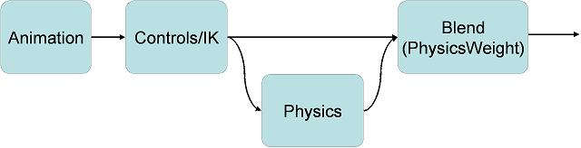
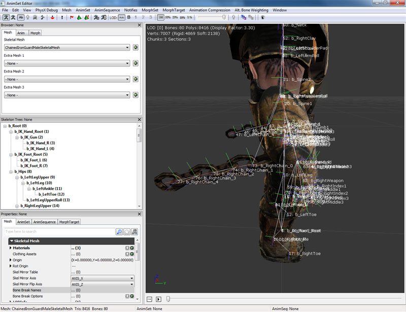
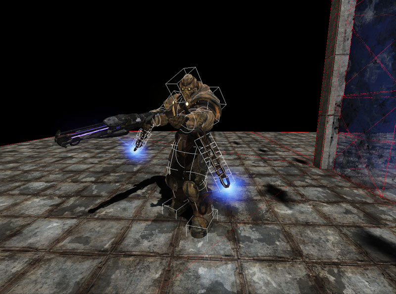
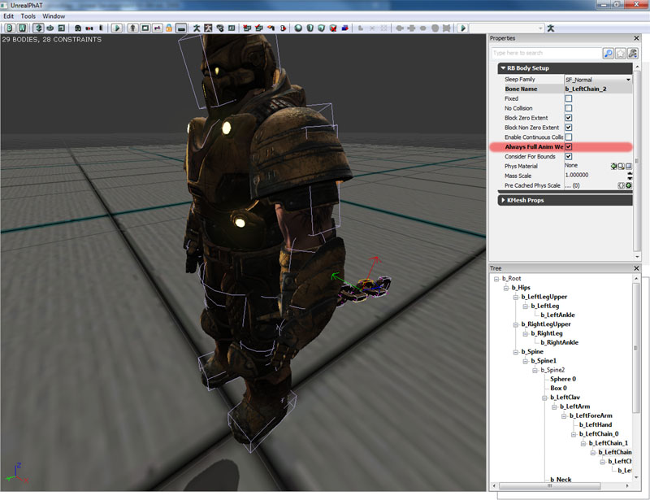
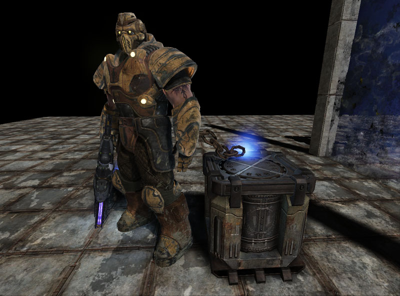
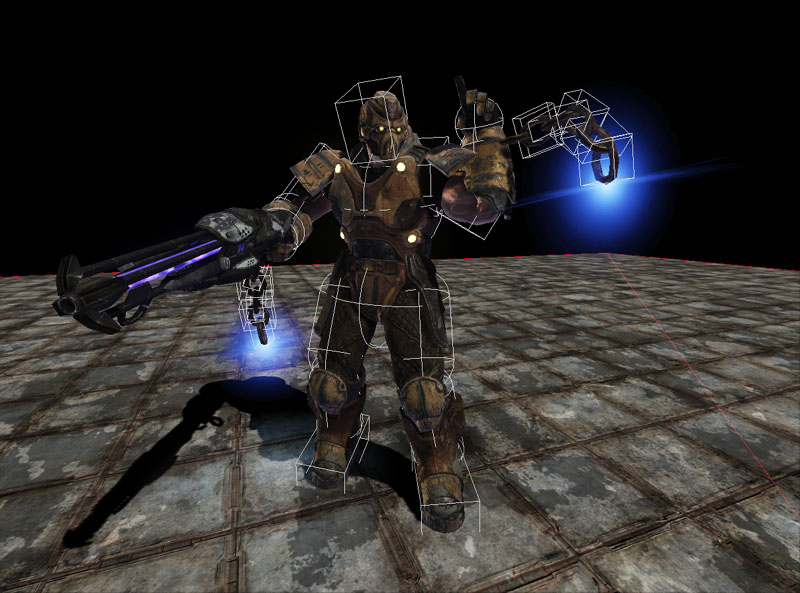
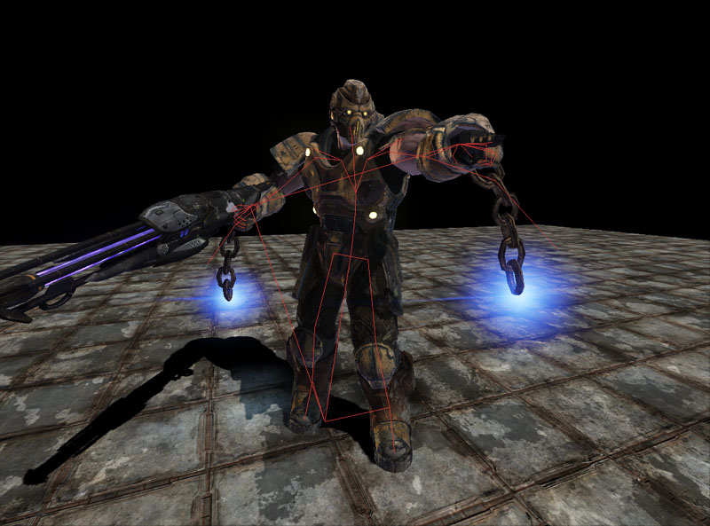
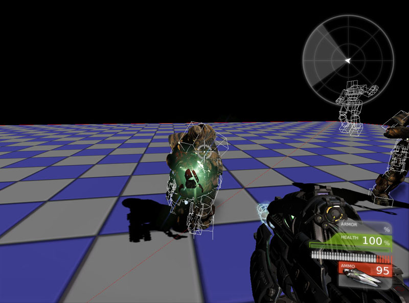
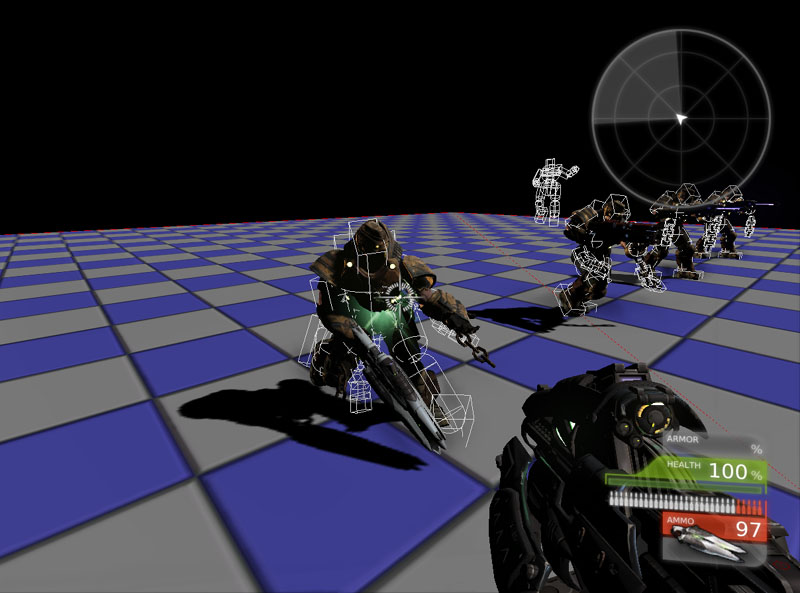

UDN
Search public documentation:
PhysicalAnimationCH
English Translation
日本語訳
한국어
Interested in the Unreal Engine?
Visit the Unreal Technology site.
Looking for jobs and company info?
Check out the Epic games site.
Questions about support via UDN?
Contact the UDN Staff
日本語訳
한국어
Interested in the Unreal Engine?
Visit the Unreal Technology site.
Looking for jobs and company info?
Check out the Epic games site.
Questions about support via UDN?
Contact the UDN Staff
物理动画
概述
有很多情况都需要在附加物上执行物理仿真以便获得期望的动画。比如，带着锁链四处游荡的犯人或者到处跳动的没有意识的角色的布娃娃。当角色移动并混合不同的动画时，预先决定角色的进展是不可能的。虚幻引擎3通过允许动画设计人员和程序员将骨架网格物体中的一些或所有骨骼定义为物理仿真的刚体附加物来解决这个问题。 角色的锁链附加到由物理驱动的手臂上，而角色身体的其他部分则通过混合动画和逆运动来进行驱动。
 一个使用物理模拟整个躯体的角色。
一个使用物理模拟整个躯体的角色。

流程
物理动画系统是虚幻引擎动画工作流程的一部分。首先，当通过动画树处理混合时已经处理了正常的动画。第二，然后通过动画树应用逆运动控制。最后，通过物理资源将物理应用到骨架上。然后物理子系统处理剩余的物理，最后图形子系统渲染所有场景。 骨架的物理是基于骨骼是固定的还是非固定的来计算的。固定骨骼从来不会通过物理进行仿真，而是通过混合动画及逆运动学系统来驱动。非固定的骨骼通过物理进行仿真。

工作流程
一般，程序员和动画制作人员共同来制作所需的物理动画内容。动画制作人员将会创建涉及到锁定刚体和模拟系统的物理资源来查看它是如何结合在一起。然后程序员将负责根据游戏性启用或启用物理动画。
控制物理
物理类型
有两种类型的物理：- Kinematic (运动学的)["固定的"]
- 按照您的设计执行动画。
- 忽略碰撞
- 给它碰撞到的物体非常强大的推力
- Dynamic(动态的) ["非固定的"]
- 实际地对碰撞做出反应
- 需要使用力或约束来控制它
物理对象
有三种类型的物理对象：- Forces(力)
- 用于应用一个持续不变的力 (比如重力或风力)
- Impulse(冲力)
- 用于应用一个一次性的力 ( 比如爆炸或枪射击)
- Constraint(约束)
- 用于应用一个持续的力 (比如关节或弹力)
骨架网格物体上的部分物理仿真
在现代游戏中一个常见的特效是使角色的某些部分执行物理仿真，而角色的其他部分使用混合动画和逆运动学（inverse kinematics）。设置这种效果的最简单的方法是使角色的骨架网格物体包含所有骨骼，包括这些用于物理仿真的部分。以下显示了带锁链的角色的骨架网格物体。

这也意味着您应该使用PhAT工具为角色创建一个PhysicsAsset(物理资源)，包括您要用于进行物理仿真的骨骼。您可以通过‘固定’除这些刚体外的所有部分来在PhAT中预览这些物理部分(这可以通过在树状结构视图中右击，并选择"Unfix All Bodies Below(取消对以下所有刚体的固定).." 或者 "Fix All Bodies Below(固定一下所有刚体)..")。您也可以通过点击骨骼，选中或取消选中 Fixed 属性来设置单独的刚体的是否固定的状态。 在工具中进行仿真期间，您可以在PreviewAnimSet(预览动画集)选项中分配一个动画集，并且从工具条上的下拉列表中选择一个动画(比如正在运行的自行车)来进行循环。按下播放按钮来循环播放该动画，或者按下停止按钮来停止动画。您可以在不必停止仿真的情况下实时地修改动画。您也可以选中 Blend On Poke(当受到戳弄时混合) 属性，它允许您用鼠标左键来戳弄骨架网格物体，并让它在部分物理仿真和完全物理仿真之间混合。
在工具中进行仿真期间，您可以在PreviewAnimSet(预览动画集)选项中分配一个动画集，并且从工具条上的下拉列表中选择一个动画(比如正在运行的自行车)来进行循环。按下播放按钮来循环播放该动画，或者按下停止按钮来停止动画。您可以在不必停止仿真的情况下实时地修改动画。您也可以选中 Blend On Poke(当受到戳弄时混合) 属性，它允许您用鼠标左键来戳弄骨架网格物体，并让它在部分物理仿真和完全物理仿真之间混合。
 请确保在游戏中为您的角色分配该PhysicsAsset(物理资源)，并设置 bHasPhysicsAssetInstance 为true。
请确保在游戏中为您的角色分配该PhysicsAsset(物理资源)，并设置 bHasPhysicsAssetInstance 为true。
 现在，当您运行游戏时，在控制台中输入 nxvis collision ，您将会看到角色的物理资源的白色图形。但是，它们还没有进行物理仿真。
现在，当您运行游戏时，在控制台中输入 nxvis collision ，您将会看到角色的物理资源的白色图形。但是，它们还没有进行物理仿真。

这里需要考虑的是这些骨骼的物理如何混合为角色的动画。一般情况下，您在骨架网格物体组件中使用 PhysicsWeight 参数来选择如何在物理引擎输出端和动画系统输出端之间进行混合(参照上面)。在这个情况中，您想使得某些特定的骨骼总是使用物理引擎的输出，即时当 PhysicsWeight 为0时也会使用。要想完成这个处理，在物理资源的每个刚体骨骼上有一个称为 bAlwaysFullAnimWeight 的参数。设置所有这些骨骼的这项为true。您也需要设置骨架网格物体组件上的 bEnableFullAnimWeightBodies 为true。
当一个角色的物理是 PHYS_RigidBody时，刚体默认为物理资源中定义的固定状态。但是，到处跑动的角色一般是在PHYS_Walking或PHYS_Falling等中，无论在物理资源中定义了什么，所有刚体默认为固定状态。为了在我们这些刚体上进行物理仿真，我们需要在代码中精确地把它们‘解除固定’。PhysicsAssetInstance中有一个很有用的函数 SetFullAnimWeightBonesFixed 。如果您查看SkeletalMeshActor，在PostBeginPlay内您可以看到一个关于解除带标志的刚体的固定状态的例子。
simulated event PostBeginPlay()
{
// 获得用于复制的当前网格物体
if (Role == ROLE_Authority && SkeletalMeshComponent != None)
{
ReplicatedMesh = SkeletalMeshComponent.SkeletalMesh;
}
// 将带标志的刚体解除为‘完全动画权重’
if (SkeletalMeshComponent != None &&
//SkeletalMeshComponent.bEnableFullAnimWeightBodies &&
SkeletalMeshComponent.PhysicsAssetInstance != None)
{
SkeletalMeshComponent.PhysicsAssetInstance.SetFullAnimWeightBonesFixed(FALSE, SkeletalMeshComponent);
}
if(bHidden)
{
SkeletalMeshComponent.SetClothFrozen(TRUE);
}
}

骨架网格物体上的完全物理仿真
- bHasPhysicsAssetInstance 必须设置为true。这将确保物理子系统实例化这个骨架网格物体的物理资源。这对于在骨架网格物体上进行基于每个骨骼的线性检测来说不是必须的。
- 用于骨架网格物体的actor不需要把物理模式设置为 PHYS_RigidBody 。这仅是确保actor的位置和旋转度和根躯体的位置和旋转度相匹配。
- 可以通过使用RB_BodyInstance中定义的 SetFixed(false) 函数来取消你想让其动态变化的刚体的固定状态。
- 确保物理已经为这些刚体混合
- 在骨架网格物体组件中将 PhysicsWeight 设置为大于零的值。
- 在骨架网格物体组件中设置 bEnableFullAnimWeightBodies 为true。
- 在RB_BodySetup中设置 bAlwaysFullAnimWeight 为 TRUE 。
simulated function bool Died(Controller Killer, class<DamageType> DamageType, vector HitLocation)
{
if (Super.Died(Killer, DamageType, HitLocation))
{
Mesh.MinDistFactorForKinematicUpdate = 0.f;
Mesh.SetRBChannel(RBCC_Pawn);
Mesh.SetRBCollidesWithChannel(RBCC_Default, true);
Mesh.SetRBCollidesWithChannel(RBCC_Pawn, false);
Mesh.SetRBCollidesWithChannel(RBCC_Vehicle, false);
Mesh.SetRBCollidesWithChannel(RBCC_Untitled3, false);
Mesh.SetRBCollidesWithChannel(RBCC_BlockingVolume, true);
Mesh.ForceSkelUpdate();
Mesh.SetTickGroup(TG_PostAsyncWork);
CollisionComponent = Mesh;
CylinderComponent.SetActorCollision(false, false);
Mesh.SetActorCollision(true, false);
Mesh.SetTraceBlocking(true, true);
SetPhysics(PHYS_RigidBody);
Mesh.PhysicsWeight = 1.0;
if (Mesh.bNotUpdatingKinematicDueToDistance)
{
Mesh.UpdateRBBonesFromSpaceBases(true, true);
}
Mesh.PhysicsAssetInstance.SetAllBodiesFixed(false);
Mesh.bUpdateKinematicBonesFromAnimation = false;
Mesh.SetRBLinearVelocity(Velocity, false);
Mesh.ScriptRigidBodyCollisionThreshold = MaxFallSpeed;
Mesh.SetNotifyRigidBodyCollision(true);
Mesh.WakeRigidBody();
return true;
}
return false;
}
虚幻编辑器
- SkeletalMeshActor及其它的子项可以使用物理来模拟骨架网格物体上的某些骨骼。
- KAsset及其子项可以放置到关卡中，以便在骨架网格物体上进行完全的物理仿真。
有用的控制台命令
- nxvis collision(nxvis碰撞) - 显示了物理仿真所使用的碰撞刚体。这个应用在 show collision 命令之上，因为 show collision 仅显示虚幻物理子系统所使用的碰撞外壳。

- show bones(显示骨骼) - 显示渲染带动画的骨架网格物体所使用的骨骼的位置和旋转度数。

- show prephysbones(显示应用物理之前的骨骼) - 显示应用了混合动画和逆运动学之后但是在应用物理之前的骨骼位置和旋转度。注意，锁链中的骨骼向是如何向外直接指出的，这是因为没有为它们预先定义动画。但是当应用物理后，锁链处于了正确的位置。

示例
在以下所有示例中都创建了一个通用的Actor。对于每个示例来说，它们的Unrealscript流程如下所示。
Unrealscript
class HitReactionPawn extends SkeletalMeshCinematicActor;
// 死亡动画
var(HitReaction) Name DeathAnimName;
// 当模拟碰撞反应时所需要解除固定状态的骨骼的名称
var(HitReaction) array<Name> UnfixedBodyNames;
// 当模拟碰撞反应时所需要启用弹力的骨骼的名称
var(HitReaction) array<Name> EnabledSpringBodyNames;
// 当模拟碰撞反应时使用的线性骨骼弹力强度
var(HitReaction) float LinearBoneSpringStrength;
// 当模拟碰撞反应时使用的角度骨骼弹力强度
var(HitReaction) float AngularBoneSpringStrength;
// 所应用的力的半径
var(HitReaction) float ForceRadius;
// 扩大力
var(HitReaction) float ForceAmplification;
// 可以应用的力的最大量
var(HitReaction) float MaximumForceThatCanBeApplied;
// 即时混合已获得碰撞反应
var(HitReaction) float PhysicsBlendInTime;
// 获得碰撞反应所需的物理仿真时间
var(HitReaction) float PhysicsTime;
// 碰撞反应的混合出时间
var(HitReaction) float PhysicsBlendOutTime;
//完全刚体布娃娃
var(HitReaction) bool FullBodyRagdoll;
var Name PreviousAnimName;
event TakeDamage(int DamageAmount, Controller EventInstigator, vector HitLocation, vector Momentum, class<DamageType> DamageType, optional TraceHitInfo HitInfo, optional Actor DamageCauser)
{
local AnimNodeSequence AnimNodeSequence;
Super.TakeDamage(DamageAmount, EventInstigator, HitLocation, Momentum, DamageType, HitInfo, DamageCauser);
if (SkeletalMeshComponent == None || SkeletalMeshComponent.PhysicsAssetInstance == None)
{
return;
}
if (IsTimerActive(NameOf(SimulatingPhysicsBlendIn)) || IsTimerActive(NameOf(SimulatingPhysics)) || IsTimerActive(NameOf(SimulatedPhysicsBlendOut)))
{
return;
}
if (FullBodyRagdoll)
{
if (DeathAnimName != '')
{
AnimNodeSequence = AnimNodeSequence(SkeletalMeshComponent.Animations);
if (AnimNodeSequence != None)
{
PreviousAnimName = AnimNodeSequence.AnimSeqName;
AnimNodeSequence.SetAnim(DeathAnimName);
AnimNodeSequence.PlayAnim();
AnimNodeSequence.bCauseActorAnimEnd = true;
return;
}
}
else
{
TurnOnRagdoll(Normal(Momentum) * FMin(DamageAmount * ForceAmplification, MaximumForceThatCanBeApplied));
}
}
else
{
if (DeathAnimName != '')
{
AnimNodeSequence = AnimNodeSequence(SkeletalMeshComponent.Animations);
if (AnimNodeSequence != None)
{
PreviousAnimName = AnimNodeSequence.AnimSeqName;
AnimNodeSequence.SetAnim(DeathAnimName);
AnimNodeSequence.PlayAnim();
AnimNodeSequence.bCauseActorAnimEnd = true;
return;
}
}
else
{
TurnOnRagdoll(Vect(0.f, 0.f, 0.f));
// 应用冲力
SkeletalMeshComponent.AddRadialImpulse(HitLocation - (Normal(Momentum) * 16.f), ForceRadius, FMin(DamageAmount * ForceAmplification, MaximumForceThatCanBeApplied), RIF_Linear, true);
// 激活刚体
SkeletalMeshComponent.WakeRigidBody();
}
}
BlendInPhysics();
}
event OnAnimEnd(AnimNodeSequence AnimNodeSequence, float PlayedTime, float ExcessTime)
{
TurnOnRagdoll(Vect(0.f, 0.f, 0.f));
BlendInPhysics();
AnimNodeSequence.bCauseActorAnimEnd = false;
}
function TurnOnRagdoll(Vector RBLinearVelocity)
{
// 强制更新骨架
SkeletalMeshComponent.ForceSkelUpdate();
// 固定不需要再物理碰撞反应中发挥作用的刚体
if (UnfixedBodyNames.Length > 0)
{
SkeletalMeshComponent.PhysicsAssetInstance.SetNamedBodiesFixed(false, UnfixedBodyNames, SkeletalMeshComponent,, true);
}
else
{
SkeletalMeshComponent.PhysicsAssetInstance.SetAllBodiesFixed(false);
}
// 在物理碰撞反应中需要的的刚体上启用弹力
if (EnabledSpringBodyNames.Length > 0)
{
SkeletalMeshComponent.PhysicsAssetInstance.SetNamedRBBoneSprings(true, EnabledSpringBodyNames, LinearBoneSpringStrength, AngularBoneSpringStrength, SkeletalMeshComponent);
}
SkeletalMeshComponent.bUpdateKinematicBonesFromAnimation = false;
SkeletalMeshComponent.SetRBLinearVelocity(RBLinearVelocity, true);
SkeletalMeshComponent.WakeRigidBody();
}
function BlendInPhysics()
{
// 设置物理混入的计时器
if (PhysicsBlendInTime > 0.f)
{
SetTimer(PhysicsBlendInTime, false, NameOf(SimulatingPhysicsBlendIn));
}
else
{
SkeletalMeshComponent.PhysicsWeight = 1.f;
SimulatingPhysicsBlendIn();
}
}
function SimulatingPhysicsBlendIn()
{
if (PhysicsTime == 0.f)
{
SimulatingPhysics();
}
else
{
// 设置位置该物理状态的计时器
SetTimer(PhysicsTime, false, NameOf(SimulatingPhysics));
}
}
function SimulatingPhysics()
{
local AnimNodeSequence AnimNodeSequence;
// 设置物理混出的计时器
SetTimer(PhysicsBlendOutTime, false, NameOf(SimulatedPhysicsBlendOut));
if (PreviousAnimName != '')
{
AnimNodeSequence = AnimNodeSequence(SkeletalMeshComponent.Animations);
if (AnimNodeSequence != None)
{
AnimNodeSequence.SetAnim(PreviousAnimName);
AnimNodeSequence.PlayAnim(true);
}
}
}
function SimulatedPhysicsBlendOut()
{
//设置物理权重为0
SkeletalMeshComponent.PhysicsWeight = 0.f;
SkeletalMeshComponent.ForceSkelUpdate();
if (FullBodyRagdoll)
{
SkeletalMeshComponent.PhysicsAssetInstance.SetAllBodiesFixed(true);
SkeletalMeshComponent.bUpdateKinematicBonesFromAnimation = true;
}
else
{
SkeletalMeshComponent.bUpdateKinematicBonesFromAnimation = true;
if (UnfixedBodyNames.Length > 0)
{
SkeletalMeshComponent.PhysicsAssetInstance.SetNamedBodiesFixed(true, UnfixedBodyNames, SkeletalMeshComponent,, true);
}
else
{
SkeletalMeshComponent.PhysicsAssetInstance.SetAllBodiesFixed(true);
}
// 禁用在物理碰撞反应中需要的刚体上弹力
if (EnabledSpringBodyNames.Length > 0)
{
SkeletalMeshComponent.PhysicsAssetInstance.SetNamedRBBoneSprings(false, EnabledSpringBodyNames, 0.f, 0.f, SkeletalMeshComponent);
}
}
// 设置刚体为休眠状态
SkeletalMeshComponent.PutRigidBodyToSleep();
}
function Tick(float DeltaTime)
{
Super.Tick(DeltaTime);
if (IsTimerActive(NameOf(SimulatingPhysicsBlendIn)))
{
// 混合入物理
SkeletalMeshComponent.PhysicsWeight = GetTimerCount(NameOf(SimulatingPhysicsBlendIn)) / GetTimerRate(NameOf(SimulatingPhysicsBlendIn));
}
else if (IsTimerActive(NameOf(SimulatedPhysicsBlendOut)))
{
// 混合出物理
SkeletalMeshComponent.PhysicsWeight = 1.f - (GetTimerCount(NameOf(SimulatedPhysicsBlendOut)) / GetTimerRate(NameOf(SimulatedPhysicsBlendOut)));
}
}
defaultproperties
{
Begin Object Name=SkeletalMeshComponent0
bHasPhysicsAssetInstance=true
bUpdateJointsFromAnimation=true
End Object
ForceRadius=64.f
}
碰撞反应的物理模拟
要想在游戏中添加额外的真实性，角色应尽可能真实地堆应用到它们上的力做出反应。无论这个力来自于世界中撞击到它们内部的对象，还是受到枪射击的冲力。当角色受到枪的射击时根据您在游戏中所需要的真实度的不同可能有两种情况发生。Arcade simulation(街机仿真)
Arcade(街机)仿真仅用于游戏中那些运动或瞄准不会受到碰撞反作用力影响的地方。因此，玩家总是保持完整的运动和瞄准能力。这对于在类似于虚幻竞技场3这样的游戏中是非常重要的，因为玩家应该总是在控制之内。 这种模拟仅在躯体的上身应用物理改变，在手部和头部启用强度较大的角度弹簧，从而使得枪支和头部指向正确的位置。 获得这个效果所需要的HitReactionPawn属性是： Unrealscript逻辑流程：
Unrealscript逻辑流程： - 当玩家射击到HitReactionPawn时调用TakeDamage函数。
- 判断是否具有有效地骨架网格物体组件、物理资源实例、以及该脚本目前是否在仿真物理中。
- FullBodyRagdoll设置为false，并且DeathAnimName为空，因此打开物理、应用径向冲力来模拟武器碰撞并激活刚体。
- 解除 UnfixedBodyNames 中定义的刚体的固定状态。如果该项为空，那么则解除所有刚体的固定状态。
- 启用 EnabledSpringBodyNames 中定义的骨骼弹簧，并设置弹簧的强度使用 LinearBoneSpringStrength 和 AngularBoneSpringStrength 中设置的值。
- 骨骼不再需要通过动画进行更新，设置 bUpdateKinematicBonesFromAnimation 为false。
- 设置Blend In timer(混入计时器)。
- 当启用混入计时器时，它将调用物理持续时间计时器。
- 当调用物理持续时间计时器时，它将调用混出计时器。
- 当混出完成后，将反转上述过程。
- 如果混入计时器正在运行或这混出计时器正在运行，那么通过找到这些计时器已经过去的时间的百分比来调整 PhysicsWeight ，从而更新动画和物理之间的混合状态。

真实的模拟
在游戏中某些真实性要求非常高的地方，通过让玩家向敌人开火来阻止敌人瞄准自己或通过射击敌人的腿部来阻止敌人添加弹药及逃跑这些处理对于增加真实性是有用的。 获得这个效果所需要的HitReactionPawn属性是：
但是，Unrealscript逻辑脚本和上面一样，并且已经设置了骨骼弹簧及其强度 这可以保持这些骨骼尽可能地和动画保持机密关系，而不至于太僵硬。
整个身体都会受到玩家射击的影响。如果需要，则要添加额外的逻辑来使得受到影响的pawn摔倒(混合入另一个动画，混合出物理，当在物理中混合一段时间后再次模拟摔倒动作)。

混合到布娃娃中的死亡动画
当角色死亡时不是立即计入布娃娃状态，而是首先根据需要播放短暂的动画。当动画结束时，混合入到布娃娃中。 获得这个效果所需要的HitReactionPawn属性是： Unrealscript逻辑流程：
Unrealscript逻辑流程： - 当玩家射击到HitReactionPawn时调用TakeDamage函数。
- 判断是否具有有效地骨架网格物体组件、物理资源实例、以及该脚本目前是否在仿真物理中。
- FullBodyRagdoll为false，并且DeathAnimName不为空。
- 播放死亡动画，并且当动画完成时确保正在播放该动画的动画节点序列调用 OnAnimEnd 函数。
- 当调用完OnAnimEnd使用，启用物理。要想获得最好的效果，请不要立即设置混合，否则死亡序列可能变得很奇怪。
- 解除 UnfixedBodyNames 中定义的刚体的固定状态。如果该项为空，那么则解除所有刚体的固定状态。
- 启用 EnabledSpringBodyNames 中定义的骨骼弹簧，并设置弹簧的强度使用 LinearBoneSpringStrength 和 AngularBoneSpringStrength 中设置的值。
- 骨骼不再需要通过动画进行更新，设置 bUpdateKinematicBonesFromAnimation 为false。
- 设置Blend In timer(混入计时器)。
- 当启用混入计时器时，它将调用物理持续时间计时器。
- 当调用物理持续时间计时器时，它将调用混出计时器。
- 当混出完成后，将反转上述过程。
- 如果混入计时器正在运行或这混出计时器正在运行，那么通过找到这些计时器已经过去的时间的百分比来调整 PhysicsWeight ，从而更新动画和物理之间的混合状态。